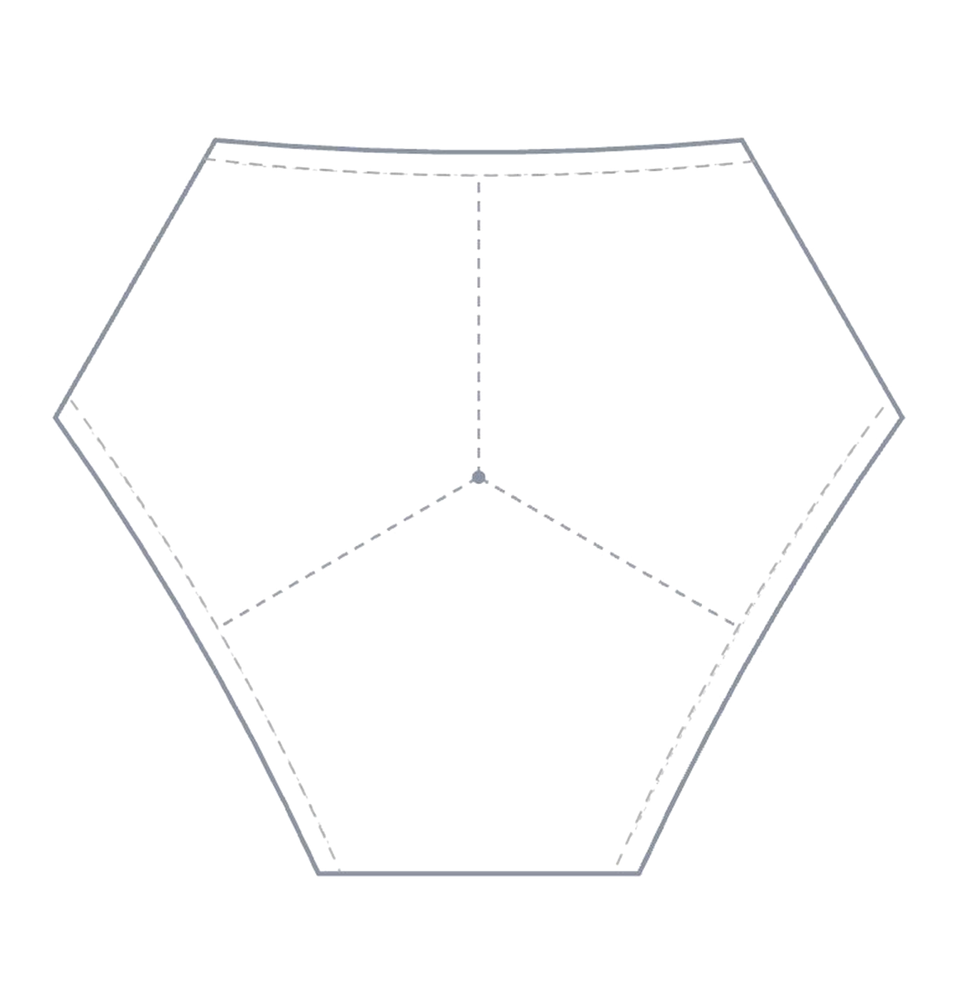
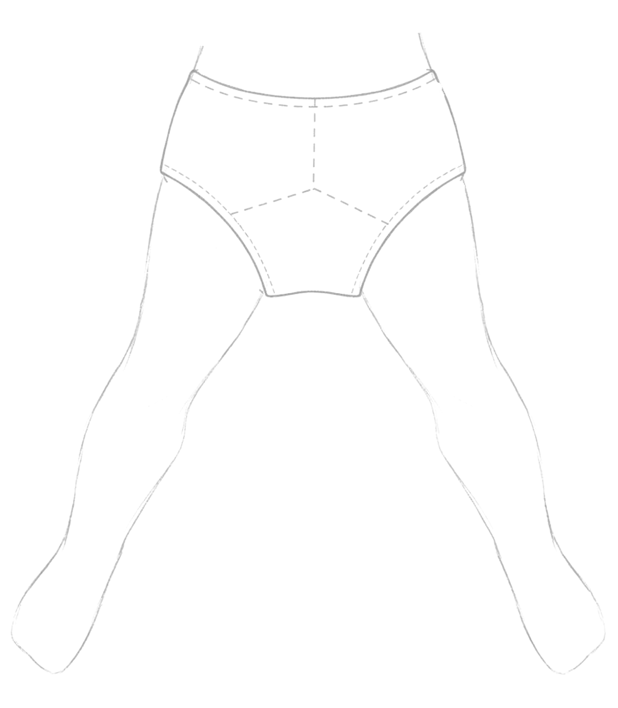

The patented design (U.S. 9,943,118 B2) features three-fold rotational symmetry — three identical openings, three internal seams meeting at a central gusset. Rotate the garment one third of a turn and it is geometrically indistinguishable from itself. Move the slider to any of the three stops to see how each orientation reaches the same correct fit on the body.


Move the slider, click a stop, or press cycle to see all three orientations reach the same fit.
"There's no wrong way to wear them."